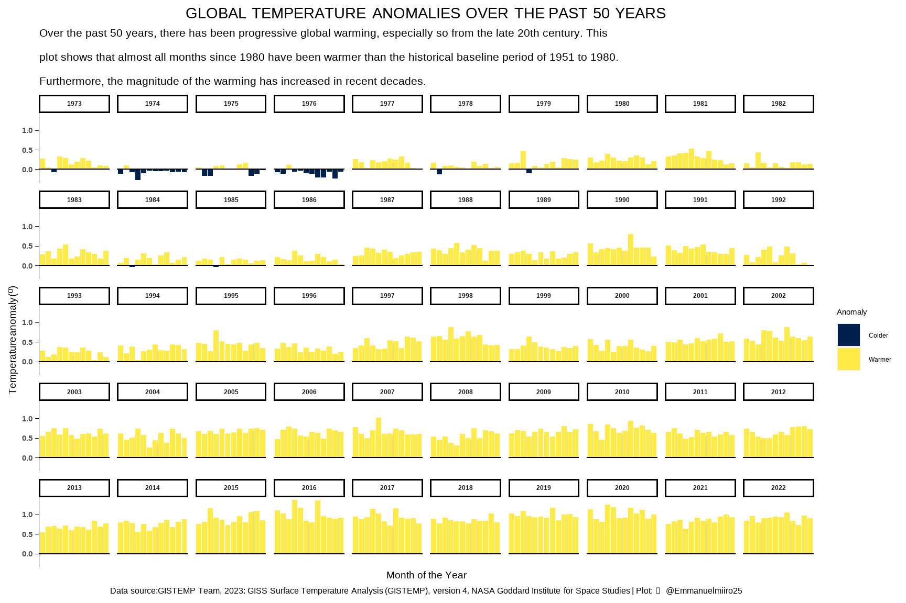

Let us set up our working environment by loading the required packages.
show computer code
library(tidyverse)library(ggtext)library(showtext)showtext_auto()# if the data is not yet saved in your working directory, get it from here: # tuesdata <- tidytuesdayR::tt_load('2023-07-11')# global_temps <- tuesdata$global_tempsglobal_temp <-read.csv(here::here("data","2023","2023-07-11","global_temps.csv" ))
About the data, anomalies and where to get further information
This data comes from NASA GISS Surface Temperature Analysis (GISTEMP v4). It shows global and hemispheric monthly means and zonal annual means. It was supplied as part of the weekly RTidyTuesday challenge. The temperatures are anomalies for that month and region where the baseline is the averaged temperature for that place from 1951 to 1980. For more information about what the anomalies are and how they are computed, see their FAQs. For the detailed methodology, see their paper: Lenssen et al., 2019: Improvements in the GISTEMP uncertainty model. J. Geophys. Res. Atmos., 124, no. 12, 6307-6326, doi:10.1029/2018JD029522.
The dataset can be cited as: GISTEMP Team, 2023: GISS Surface Temperature Analysis (GISTEMP), version 4. NASA Goddard Institute for Space Studies. Dataset originally accessed 2023-07-09 at https://data.giss.nasa.gov/gistemp/.
Visualizing global temperature anomalies
Here, I create a bar graph of temperature anomalies for the past 50 years. 2023 is excluded because its data is incomplete. Warmer months (with positive anomalies) are colored yellow while colder months (negative temperature anomalies) are colored dark.
show computer code
# create a narrower table; categorize anomalies; 2023 has incomplete data so leave it out. Take the last 50 years.global_temp_narrow <-pivot_longer(global_temp, values_to ="Temperature", names_to ="Month", cols = Jan:Dec) |>select(Year, Month, Temperature) |>mutate(Feel =case_when(Temperature >0~"Warmer", Temperature <0~"Colder", Temperature ==0~"Normal")) |>filter(Year >=1973& Year <2023)# making the plot begins heretitle <-toupper("Global temperature anomalies over the past 50 years")subtitle <- stringr::str_wrap("Over the past 50 years, there has been progressive global warming, especially so from the late 20th century. This plot shows that almost all months since 1980 have been warmer than the historical baseline period of 1951 to 1980. Furthermore, the magnitude of the warming has increased in recent decades.", width =120)caption <-"Data source:GISTEMP Team, 2023: GISS Surface Temperature Analysis (GISTEMP), version 4. NASA Goddard Institute for Space Studies | Plot: <span style='font-family:fa-brands'></span> @Emmanuelmiiro25"p1 <-ggplot(global_temp_narrow, aes(x = Month, y = Temperature, fill = Feel)) +geom_col()p2 <- p1 +facet_wrap(~ Year, ncol =10)p3 <- p2 +scale_fill_viridis_d(option ="E", name ="Anomaly")# the above 3 lines of code are the major elements of this plot. What follows is icing on the cake.# the modifications of theme here are to remove extraneous plot elements and allow the data to stand out. Similar to ggplot::theme_classic()p4 <- p3 +scale_x_discrete(name ="Month of the Year", guide ="none") +scale_y_continuous(name ="Temperature anomaly (<sup>0</sup>)") +labs(title = title, subtitle = subtitle, caption = caption)p5 <- p4 +theme(text =element_text(family ="fira sans"),axis.title =element_text(size =14, colour ="black"),axis.text =element_text(size =11),axis.ticks.y.left =element_line(colour ="black", linewidth = .2),axis.text.y.left =element_text(face ="bold"), axis.title.y =element_markdown(),axis.line.y.left =element_line(colour ="black", linewidth = .2, linetype ="solid"), plot.caption =element_markdown(hjust = .5, size =12),plot.title =element_markdown(size =22, hjust = .5),plot.subtitle =element_text(size =16),panel.border =element_blank(),panel.grid.major =element_blank(),strip.background =element_rect(fill ="white", colour ="black", linewidth =rel(2)),strip.text =element_text(face ="bold"),panel.grid.minor =element_blank(), plot.background =element_rect(fill ="transparent", colour ="transparent"),panel.background =element_rect(colour ="transparent", fill ="transparent"))# create a horizontal bar line at temp = 0p6 <- p5 +geom_hline(yintercept =0)p6

Miscellaneous: How to add font icons from fontawesome
It took me a while to figure out how to add a twitter icon into the plot caption. The font icons are available from Frontawesome. To use them locally, download the desktop version of fontawesome. Extract the files to your working directory then import the fonts via sysfonts::font_add() whose first argument is the font family name, whilst the second argument is the path to the .otf file. Make sure to specify the path to the .otf-files correctly. To check if the fonts have become available, run sysfonts::font_families(). Credit to Albert Rapp for his tutorial. The code below is illustrative of my device.
show computer code
# download the zipped fontawesome folder, extract it to your working directory, then: font_add('fa-reg', "/fontawesome-free-6.4.0-desktop/otfs/Font Awesome 6 Free-Regular-400.otf") # first argument is family name, second argument is the path to the location of the .otffont_add('fa-brands', "/fontawesome-free-6.4.0-desktop/otfs/Font Awesome 6 Brands-Regular-400.otf")font_add('fa-solid', "/fontawesome-free-6.4.0-desktop/otfs/Font Awesome 6 Free-Solid-900.otf")# after that the font icons will be available in your system fonts.